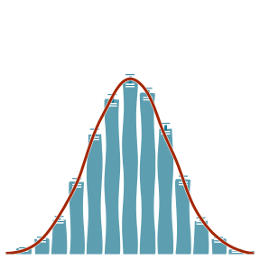
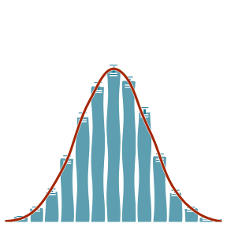
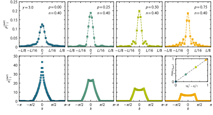

Exploring imbalanced Fermi gases
with stochastic quantization
Lukas Rammelmüller, LMU Munich
Cold Quantum Coffee, January 28, 2020

I) motivation: why ultracold fermions?
II) Monte Carlo, the sign problem & complex Langevin in a nutshell
III) some results for 3D and 1D fermions
we can find strongly correlated systems in nature...
... and study them in the lab!
[reviews: Giorgini,Pitaevskii,Stringari '08; Ketterle,Zwierlein '08]

[reviews: Giorgini,Pitaevskii,Stringari '08; Zwerger '12]


(threshold of bound-state formation)
strongly correlated,
non-perturbative many-body problem
spin polarization
mass imbalance
thermodynamics? critical imbalance for superfluidity?
structure of pairing? inhomogeneous phases?
kinetic part
interaction part
$$ \hat H = -\sum_{s=\uparrow,\downarrow} {\int{\!d^dx\ {\hat{\psi}_{s}^{\dagger}(\vec x)} \left(\frac{\hbar^2\vec{\nabla}^2}{2 m_s}\right)\hat{\psi}_{s}(\vec x)}} \quad+\quad g\int{\!d^dx\ {\hat{\psi}_{\uparrow}^{\dagger}(\vec x)} \,\hat{\psi}_{\uparrow}(\vec x)\,{\hat{\psi}_{\downarrow}^{\dagger}(\vec x)} \,\hat{\psi}_{\downarrow}(\vec x)} $$
$$ \langle \hat{\mathcal{O}}\rangle = \frac{1}{\mathcal{Z}} \int{\!\mathcal{D}\phi\ \mathcal{O}[\phi]\,\mathrm{e}^{-S[\phi]}} \equiv \int{\!\mathcal{D}\phi\ \mathcal{O}[\phi]\,P[\phi]} $$
stochastic evaluation:
$$ \langle \hat{\mathcal{O}}\rangle \approx \frac{1}{N}\sum_{i=1}^N \mathcal{O}[\phi_i]$$

 

efficiency of MC relies on positive semidefinite probability measure,
otherwise we encounter a sign problem!
reweighting is no (efficient) solution: relative uncertainty $\propto e^{\#V\beta}$
if any of these conditions applies:
$\mu_{\uparrow} \neq \mu_{\downarrow}$
$m_\uparrow \neq m_\downarrow$
$g > 0$
$$ \langle \hat{\mathcal{O}}\rangle = \frac{1}{\mathcal{Z}} \int{\!\mathcal{D}\phi\ \mathcal{O}[\phi]\,\mathrm{e}^{-S[\phi]}} \equiv \int{\!\mathcal{D}\phi\ \mathcal{O}[\phi]\,P[\phi]} $$
stochastic evaluation:
$$ \langle \hat{\mathcal{O}}\rangle \approx \frac{1}{N}\sum_{i=1}^N \mathcal{O}[\phi_i]$$
probability measure of a d-dimensional Euclidean path integral as
equilibrium distribution of a d+1-dimensional random process
$\langle\eta_t\eta_{t'}\rangle = 2\delta(t-t')$
(not physical)
fast enough and $S[\phi]$ is holomorphic
- could lead to ergodicity issues (bottlenecks)
[Aarts,Seiler,Sexty,Stamatescu '17]
- behavior must be monitored
[Scherzer,Seiler,Sexty,Stamatescu '19; '20]
take home:
the sign problem & CL
the sign problem is hard to solve,
most likely there is no generic solution
complex Langevin is a versatile approach
that works for some theories (but fails for others)
$a_S \gg n^{-1/3} \gg r_0$
microscopic details of the interaction
[Regal,Greiner,Jin '04;
Zwierlein et al. '04;
Kinast et al. '04;
Shin,Schunck,Schirotzek,Ketterle '08;
Chin,Grimm,Julienne,Tiesinga '10;
Nascimbène et al. '10;
van Houcke et al. '12;
Ku,Sommer,Cheuck,Zwierlein '12;
Carcy et al. '19; Mukherjee et al. '19;
...]


temperature
polarization


[Fulde,Ferell '64; Larkin,Ovchinnikov '65;
Sarma '63; Liu,Wilczek '03; Bulgac,Forbes,Schwenk '06]
[Combescot,Recati,Lobo,Chevy '07;
Schirotzek,Wu,Sommer,Zwierlein '09;
Nascimbène et al. '10; Yan et al. '19]
[mean-field: Chandrasekhar '62; Clogston '62;]
[exp: Shin et al. '08; Navon et al. 10']
[FN-DMC: Lobo,Recati,Giorgini,Stringari '06]

$\mu = \frac{\mu_\uparrow + \mu_\downarrow}{2}\quad\ $ $h = \frac{\mu_\uparrow - \mu_\downarrow}{2}$

$\mu = \frac{\mu_\uparrow + \mu_\downarrow}{2}\quad\ $ $h = \frac{\mu_\uparrow - \mu_\downarrow}{2}$
[balanced $T_c$: Ku,Sommer,Cheuck,Zwierlein '12;
Nascimbene et al. '10; Nascimbene et al. '11]

with experiment and other methods!
finite lattice $V = 11^3$
($\lambda_T \ll V^{1/3}$ must be fulfilled)
[DHMC: Drut,Lähde,Wlazlowski,Magierski '12]
[Luttinger-Ward: Frank,Lang,Zwerger '18]
dilute gases: few-body correlations dominate
idea: describe the system as expansion in few-body clusters
$$z = e^{\beta\mu}$$
$$\ln \mathcal{Z} = \mathcal{Q}_1\sum_{n}{z^nb_{n}}$$


density & magnetization
equations of state
$$n(\beta\mu,\beta h) = \frac{1}{\mathcal{Z}}\frac{\partial\mathcal{Z}}{\partial (\beta \mu)}$$
$$m(\beta\mu,\beta h) = \frac{1}{\mathcal{Z}}\frac{\partial\mathcal{Z}}{\partial (\beta h)}$$
pressure & energy
$$P(\beta \mu) = \frac{1}{\beta}\int_{-\infty}^{\beta\mu}{n(x)\ dx} \qquad E = \frac{3}{2}PV$$
compressibility & specific heat
$$ \kappa_{\mathrm{T}} = \frac{1}{n}\left[\frac{\partial n}{\partial P}\right]_{\beta h, T, V} \qquad C_{\mathrm{V}}/N = \left[\frac{\partial E}{\partial T}\right]_{N,V} $$


spin susceptibility
$$\chi = \left[\frac{\partial m}{\partial(\beta h)}\right]_{\beta\mu, T, V}$$
suppression of $\chi$ for $T > T_C$
unitary Fermi gas at finite temperature and polarization
for previously inaccessible quantities
of correlation functions:
$$ |C(r)| \propto {r^{-\Delta}}\qquad\qquad\qquad$$
$n{\uparrow\downarrow}(k,k') = \langle \hat{\psi}_{\uparrow}^{\dagger}(k) \, \hat{\psi}_{\downarrow}^{\dagger}(k) \, \hat{\psi}_{\downarrow}(k') \, \hat{\psi}_{\uparrow}(k') \rangle$
$\rho_{\uparrow\downarrow}(|x - x'|) = \langle \hat{\psi}_{\uparrow}^{\dagger}(x) \, \hat{\psi}_{\downarrow}^{\dagger}(x) \, \hat{\psi}_{\downarrow}(x') \, \hat{\psi}_{\uparrow}(x') \rangle$

$p = \frac{N_\uparrow-N_\downarrow}{N_\uparrow+N_\downarrow}$
~ likelihood to find
a pair with
momentum $k$
spatially
fluctuating
"order parameter"
off-center peak: hallmark of FFLO type pairing
$ \qquad\qquad\qquad\qquad - \langle \hat{\psi}_{k\uparrow}^{\dagger} \, \hat{\psi}_{k\uparrow} \rangle \langle \hat{\psi}_{k'\downarrow}^{\dagger} \, \hat{\psi}_{k'\downarrow} \, \rangle $

$ \qquad\qquad\qquad\qquad - \langle \hat{\psi}_{k\uparrow}^{\dagger} \, \hat{\psi}_{k\uparrow} \rangle \langle \hat{\psi}_{k'\downarrow}^{\dagger} \, \hat{\psi}_{k'\downarrow} \, \rangle $
recap
complex Langevin is a valuable tool
to study ultracold Fermi gases
(it works quite well)
extension of shot-noise anlalysis to 2D/3D Fermi gases
(observable in experiment?)
thermodynamics of mass-imbalanced unitary Fermions
(possible FFLO stabilization?)
attack FFLO type pairing with continuous-space methods
(diagrammatic MC?)
team CL
Jens Braun

Florian Ehmann


Juliane Helbich

LR (now LMU)
Joaquin Drut

Andrew Loheac


Josh McKenney
Casey Berger
TU Darmstadt
UNC Chapel Hill